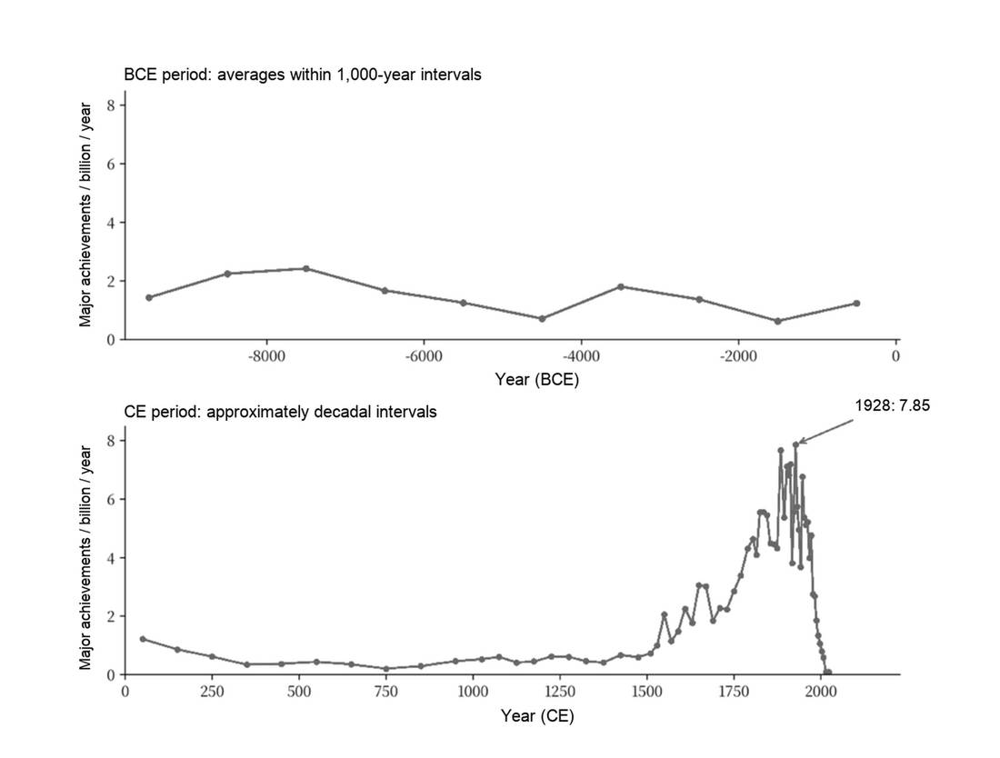
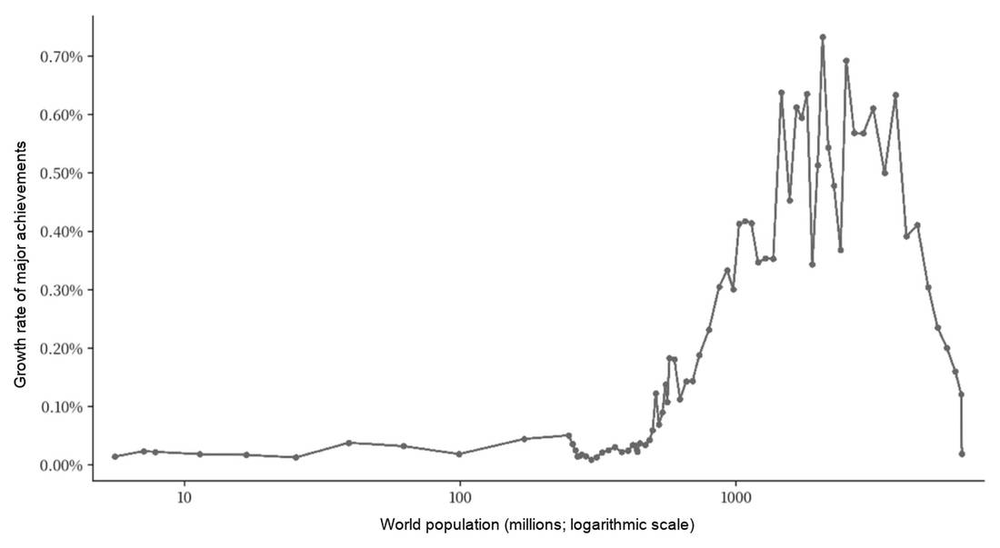
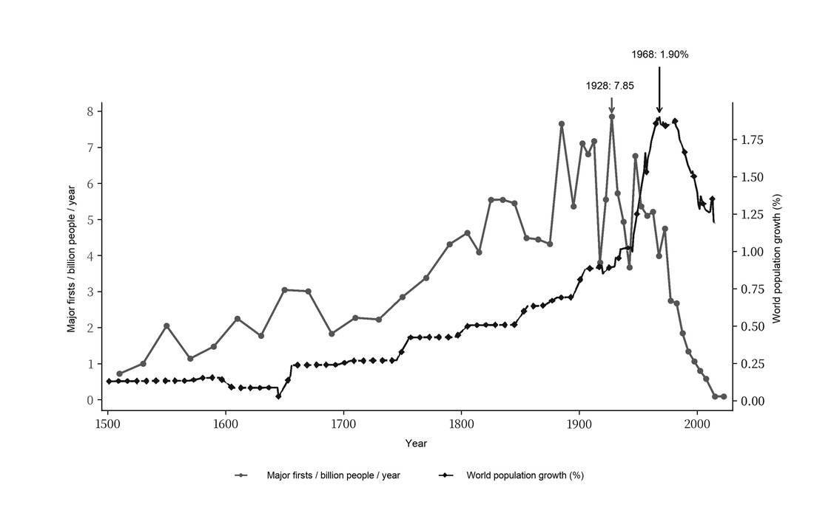

Do more people mean more major innovations? What is the relationship between population size and technological innovation?
Does a larger population produce more major scientific and technological firsts? Will growing numbers of educated people and researchers keep accelerating breakthroughs? The relationship involves both the number of potential creators and the ways people turn existing knowledge into new discoveries. It also raises further questions: To what extent do major innovations drive population and economic growth? What role do widespread, everyday improvements play?
Malthus examined the pressure that population growth places on living standards. Schumpeter emphasized the role of entrepreneurial innovation in economic change. Solow incorporated technological progress into the analysis of economic growth, and Romer brought knowledge production into the growth mechanism itself. Knowledge can be reused by different people, and new knowledge creates possibilities for subsequent creators, producing cumulative effects. This reasoning raises a testable question: As the number of knowledge producers grows, does the growth of major scientific and technological achievements accelerate accordingly? We examine this scale relationship through long-run data on major firsts and population.
In research published in 2016, the author and colleagues compared changes in scientific and technological achievements and population size over the preceding ten thousand years. Population data came from historical estimates assembled by Manning, and achievement data came from our database. Figures I-8 and I-9 have been redrawn using the achievement data updated in 2026 to examine the historical relationship between population size and major firsts.
Figure I-8. Major scientific and technological achievements per billion people per year over nearly ten thousand years. The upper panel shows millennial averages for the BCE period; the lower panel shows CE data at approximately decadal intervals. The panels have different time resolutions. Population estimates are interpolated averages of 12 sources compiled by Manning (2008); achievements come from the database updated in 2026.

Figure I-9. Growth rate of major scientific and technological achievements versus world population, with a logarithmic population axis. Data conventions are the same as in Figure I-8.

Several observations under this statistical approach merit discussion.
Figure I-8 shows that the annual number of major achievements per person peaked around the 1920s and then declined markedly. World population continued to grow, but the number of major firsts produced per billion people each year fell. More strikingly, education, the research workforce, research facilities, and funding all expanded substantially over the past century. The human and material resources available for creating knowledge far exceed those of earlier periods. This contrast between expanding inputs and declining major firsts per person is one of the most important questions raised by our research.
Figure I-9 examines this change against population size. During periods of smaller world population, the growth rate of major achievements is positively correlated with population size. In some periods after population exceeded roughly two billion, the relationship turns negative. Population growth adds potential creators, markets, and opportunities for cooperation, yet major breakthroughs have not automatically accelerated with numbers. The intuition that “more people mean more good ideas” therefore needs closer examination. Mobilizing ever larger numbers can expand research and improvement activities, but it does not ensure proportional growth in major firsts. The question becomes what kinds of knowledge accumulation, exploration, and organizational environment are most conducive to breakthroughs.
Growing research inputs accompanied by relatively fewer breakthroughs invite us to reconsider how resources are invested. Existing knowledge becomes more complex, reaching the frontier requires longer training, and research increasingly relies on costly equipment and collaboration. The allocation of resources and the room allowed for unconventional ideas also shape exploration. The author is particularly concerned with whether an expanding research system leaves enough opportunity for questions capable of opening new paths. Research organization and evaluation need to accommodate both greater investment and the pursuit of major breakthroughs.
The research also finds that, over some long periods, acceleration or deceleration in major achievements precedes changes in population. This offers evidence for a view the author advances: Major innovations can first open new possibilities for survival and development, within which population and economic activity subsequently expand. Agriculture increases food supplies; medicine and public health reduce mortality; power and machinery expand production. Population growth then enlarges markets, specialization, and the exchange of knowledge, feeding back into creativity. Major breakthroughs play a path-opening role within this relationship.
Figure I-10 places major scientific and technological firsts per billion people per year and world population growth on the same timeline. The former peaks in the early twentieth century, the latter around the middle of the century. Their sequence makes this feedback more visible. It directs attention both to how breakthroughs change the conditions for population growth and to why population expansion has not generated a comparable increase in major innovation. Part VIII returns to age structure and future demographic and technological trends in China, the United States, and other regions.
Figure I-10. Major scientific and technological firsts per billion people per year and the world population growth rate. Calculated from the 2026 Database of Major Scientific and Technological Achievements, Manning (2008), and United Nations population data. Population growth is smoothed with an 11-year moving average.

Major innovation and incremental innovation together form the structure of scientific and technological development. We can imagine a pyramid: relatively few major firsts that open new directions at the top, and a vast body of continuing improvements and applications below. This database focuses on the major achievements at the top; papers, patents, and product updates record a wider range of creative activity. Faster product turnover and an expanding variety of applications can therefore coexist with fewer major firsts per person per year. The overall bustle of scientific and technological activity and the rhythm of major breakthroughs describe different sides of development.
Incremental innovation improves performance, lowers costs, adds functions, or adapts technologies and products to new settings using existing knowledge. Each change may be small, but such changes are numerous and closely connected to production and everyday life. A major invention becomes reliable, affordable, and easy to use through countless improvements, eventually benefiting large populations. The processes, tools, data, and user experience accumulated through incremental innovation may also provide foundations for the next major breakthrough.
Major scientific and technological innovation expands the space in which later creators can work. From the perspective of technological and industrial change, the author identifies three common paths: applying new scientific principles to create technologies, products, or whole industries; achieving breakthroughs in foundational areas such as energy or materials that reorganize industrial systems; and introducing important technologies or products within existing industries that open new applications and markets. Major scientific discoveries also change how people understand nature, providing new knowledge for these paths.
A major achievement often has a long life and generates dense clusters of subsequent innovation. Electromagnetism, electrical technology, and electronic devices successively opened new possibilities, which countless creators developed into lighting, communication, computing, and production equipment. Major innovation opens a path; incremental innovation widens and consolidates it, while bringing new problems back to the frontier. The two work in succession and in feedback. If major breakthroughs remain scarce for a long time, improving existing approaches may become harder, additional returns may shrink, and the economy may face weakening sources of growth.
Two complementary approaches can also be discerned in the creative process. One begins with theory, imagination, or an overall design and proposes possibilities that current markets have yet to express. The other starts with users and practical problems and improves solutions through repeated trials and feedback. The former may open new industries; the latter brings new capabilities into everyday life. Major innovations often move back and forth between them. How policy and business balance long-term exploration with immediate demand affects the resources available to major and incremental innovation alike.
If the creators of major innovations are called “heroes,” the observation that major achievements precede population changes makes the historical role of these relatively few individuals particularly striking. Yet around every breakthrough are craftspeople, engineers, users, and unnamed improvers who help turn it into a force that changes life. Failed attempts also leave knowledge: They expose difficulties, rule out unworkable paths, and save later investigators time and expense. In this sense, heroes and ordinary people make history together. Major breakthroughs and broad participation each have a place within the same process.
Some major innovations also transform social structures. New technologies change costs, capabilities, and forms of organization, bringing new industries and groups into prominence and reshaping occupations and interests. Through competition and reorganization, a new social order gradually emerges. A “phase transition” offers a useful analogy. The greater the possibilities opened by a major innovation, the wider the ensuing process of incremental improvement, industrial expansion, and social adjustment. The history of science and technology is thus also the history of how discoveries and inventions become social forces.
The chapters that follow explore the six categories of need. Let us first return to the time when humans moved out of Africa, enter the settings of our ancestors’ lives, and follow the creation and spread of knowledge and tools. In encountering the pleasures and hardships of innovation, we can also begin to think about the future.
[1] Acemoglu, D., and Robinson, J. A. Why Nations Fail: The Origins of Power, Prosperity, and Poverty. New York: Crown Business, 2012.
[2] Arthur, W. B. The Nature of Technology: What It Is and How It Evolves. New York: Free Press, 2009.
[3] Basalla, G. The Evolution of Technology. Cambridge: Cambridge University Press, 1989.
[4] Boserup, E. Population and Technological Change: A Study of Long-Term Trends. Chicago: University of Chicago Press, 1981.
[5] Comin, D., Easterly, W., and Gong, E. Was the Wealth of Nations Determined in 1000 BC?. American Economic Journal: Macroeconomics, 2010, 2(3): 65–97.
[6] Diamond, J. Guns, Germs, and Steel: The Fates of Human Societies. New York: W. W. Norton, 1997.
[7] Dong, J. A Brief History of Human Technological Innovation: The Power of Desire. Beijing: CITIC Press, 2019. [In Chinese.]
[8] Dong, J., Cao, Y., and Mao, L. “Historical Statistics of Scientific and Technological Achievements and Eurocentrism.” Studies in Science of Science 32, no. 7 (2014): 987–995. [In Chinese.]
[9] Dong, J., Chen, J., and Mao, L. “Characteristics of Scientific and Technological Development in Chinese History from a Statistical Perspective.” Journal of Dialectics of Nature 36, no. 3 (2014): 29–36. [In Chinese.]
[10] Dong, J., Li, W., Cao, Y., and Fang, J. How Does Technology and Population Progress Relate? An Empirical Study of the Last 10,000 Years. Technological Forecasting and Social Change, 2016, 103: 57–70.
[11] Galor, O., and Weil, D. N. Population, Technology, and Growth: From Malthusian Stagnation to the Demographic Transition and Beyond. American Economic Review, 2000, 90(4): 806–828.
[12] Jones, C. I. R&D-Based Models of Economic Growth. Journal of Political Economy, 1995, 103(4): 759–784.
[13] Koltko-Rivera, M. E. Rediscovering the Later Version of Maslow’s Hierarchy of Needs: Self-Transcendence and Opportunities for Theory, Research, and Unification. Review of General Psychology, 2006, 10(4): 302–317.
[14] Kremer, M. Population Growth and Technological Change: One Million B.C. to 1990. The Quarterly Journal of Economics, 1993, 108(3): 681–716.
[15] Maddison, A. Maddison Database 2010. Groningen Growth and Development Centre, 2010. https://www.rug.nl/ggdc/historicaldevelopment/maddison/releases/maddison-database-2010
[16] Malthus, T. R. An Essay on the Principle of Population. Oxford: Oxford University Press, 1993. (Originally published in 1798.)
[17] Manning, S. Year-by-Year World Population Estimates: 10,000 B.C. to 2007 A.D. 2008. https://scottmanning.com/content/year-by-year-world-population-estimates/
[18] Maslow, A. H. A Theory of Human Motivation. Psychological Review, 1943, 50(4): 370–396.
[19] Mokyr, J. The Gifts of Athena: Historical Origins of the Knowledge Economy. Princeton: Princeton University Press, 2002.
[20] Nevis, E. C. “Using an American Perspective in Understanding Another Culture: Toward a Hierarchy of Needs for the People’s Republic of China.” The Journal of Applied Behavioral Science 19, no. 3 (1983): 249–264.
[21] North, D. C. Institutions, Institutional Change and Economic Performance. Cambridge: Cambridge University Press, 1990.
[22] Romer, P. M. Endogenous Technological Change. Journal of Political Economy, 1990, 98(5): S71–S102.
[23] Schumpeter, J. A. The Theory of Economic Development: An Inquiry into Profits, Capital, Credit, Interest, and the Business Cycle. New Brunswick: Transaction Publishers, 2008. (Originally published in 1911.)
[24] Solow, R. M. A Contribution to the Theory of Economic Growth. The Quarterly Journal of Economics, 1956, 70(1): 65–94.
[25] Weber, M. The Protestant Ethic and the Spirit of Capitalism. Translated by Kalberg, S. Los Angeles: Roxbury, 2002. (Originally published in 1904–1905.)
This article is from Part I, Desire and Innovation, of The Power of Desire: A Brief History of Scientific & Technological Innovation (second edition) — Population Size and Technological Innovation. Previous: Three Great Technological Revolutions. This concludes Part I; the serialization continues with Part II, Necessities: Subsistence. See the full serialization index.
More from Part I: Maslow Hierarchy of Needs Innovation · Six Categories of Technological Value · Ten Thousand Years of Innovation · Three Great Technological Revolutions